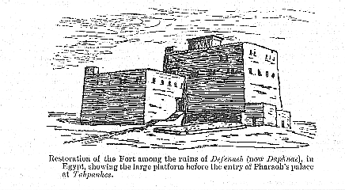

|
(Jer. 43:9). In the year 1886 W.M. Flinders Petrie was exploring at Tell Defenneh, in Egypt; he was told that the name of one of the mounds was Kasr Bint el Jehudi, which means "the palace of the Jew's daughter". This name recalled to his mind the passage in Jeremiah 43:6, 7, and at once connected Defenneh with "Tahpanhes", where in vv. 8-11 Jeremiah received this order : "Take great stones in thine hand, and hide them in the clay in the brickkiln, which is at the entry of Pharaoh's house in Tahpanhes, in the sight of the men of Judah; and say unto them, Thus saith the LORD of hosts, the God of Israel; Behold, I will send and take Nebuchadrezzar the king of Babylon, My servant, and will set his throne upon these stones that I have hid; and he shall spread his royal pavilion over them", &c. Jer. 43:8-10.In the notes on 2Sam. 12:31, Jer 43:9, and Nah. 3:14, we have shown that the Heb. malben cannot mean a "brickkiln" as rendered in the A.V. and in R.V. (2Sam. 12:31, and Nah. 3:14 (marg. brickmould)), but brickwork of any kind. In 2Sam, 12:31, and Jer. 43:9, a pavement of brickwork; and in Nah. 3:14, fortresses built of brick. That this is so is fully proved by Jer. 43:9, as the prophecy could not be fulfilled by Nebuchadrezzar's spreading his pavilion over the stones hidden in a "brickkiln", to say nothing of a brickkiln being situated "at the entry of Pharaoh's house". Neither would a brickkiln require to be fortified. But it was left to Professor Flinders Petrie to discover the solution of the difficulty on clearing around the fort: "The entrance was in the side of a block of buildings projecting from the fort; and in front of it, on the opposite side of the roadway, similarly projecting from the fort, was a large platform of brickwork suitable for out-door business, ... just what is now called a mastaba ... Jer. 43:9 is the exact description of the mastaba which I found." See the illustration below, which we give by permission.  (Photo Caption: Restoration of the Fort among the ruins of Defenneh
(now Daphnae),
in Egypt, showing the large platform before the entry of Pharaoh's
palace at Thapanhes.
|